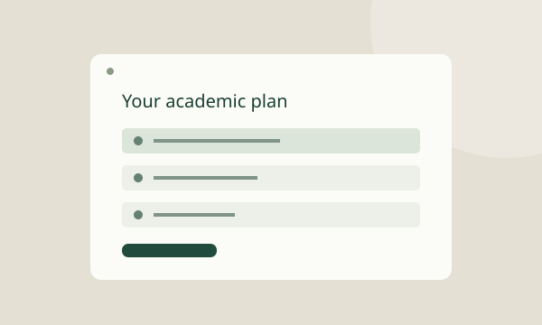
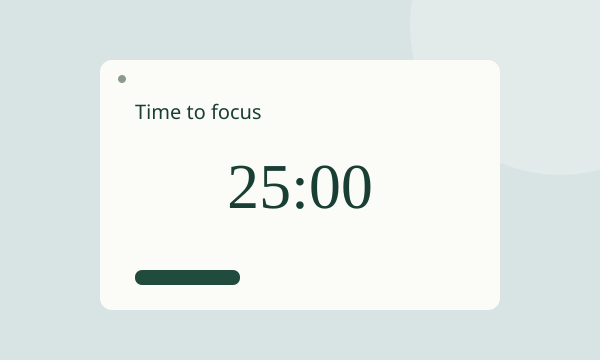

Grade Calculator
Enter a score out of 100 and it shows the letter grade. Built with if/else statements, a function and input checking for numbers from 0 to 100.
Enter a score out of 100 and it shows the letter grade. Built with if/else statements, a function and input checking for numbers from 0 to 100.

A task list for school work. Add tasks with a due date and priority, mark them complete, filter them and delete them. Tasks are saved with local storage.
Open planner
A 25-minute study timer with start, pause and reset. Uses JavaScript timers and the system clock so the countdown stays accurate.